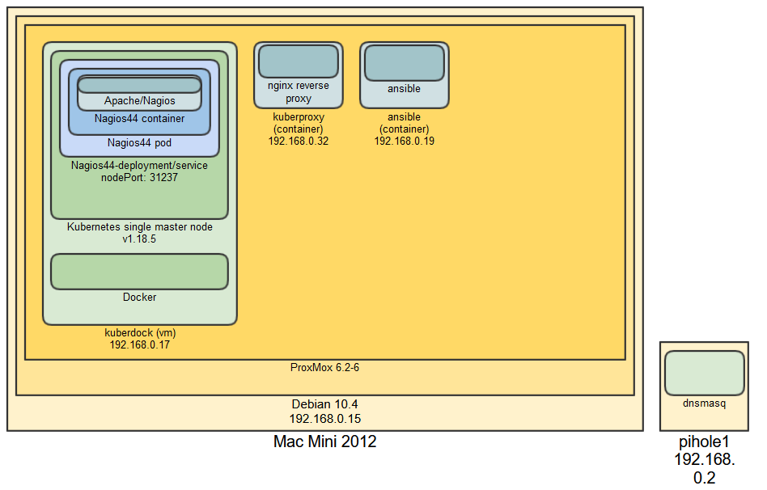
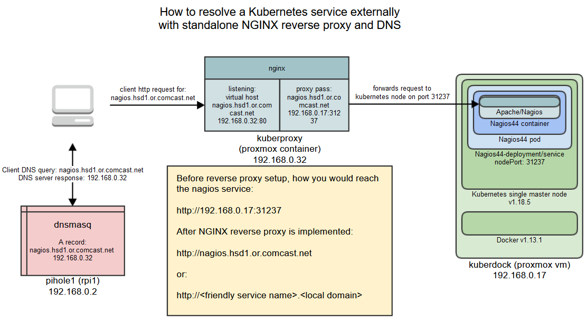

This page is to track my recent project developing a virtual environmet to learn some new (to me) tools around container-based virtualization and configuration management. 

The diagram above outlines the solution I used for resolving a kubernetes-hosted service outside of the kunernetes cluster. I feel it meets the needs of a personal lab environment without the the overhead of configuring more complex solutions. Note that there are more appropriate solutions for solving this in a production environment (see: cloud provider load balancer or ingress controller) where scaling efforts and more complex requirements must be considered. I hope to outline the pros the cons of my implementation as it relates to a lab deployment for sake of learning.